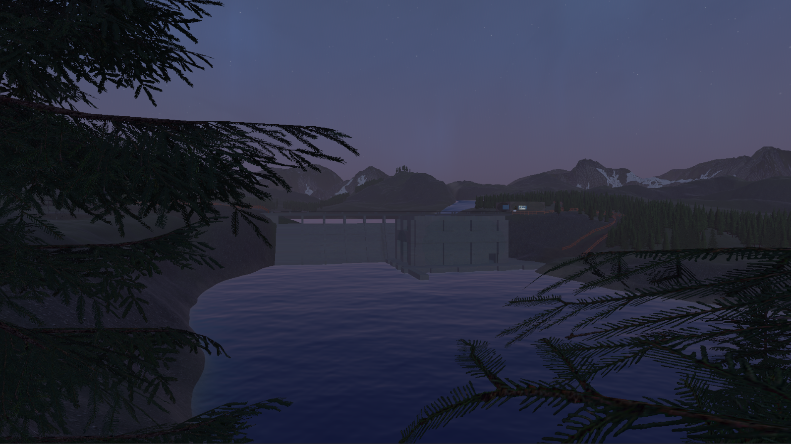
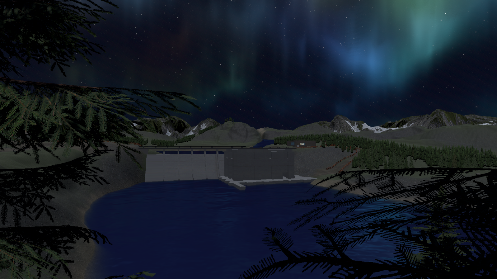
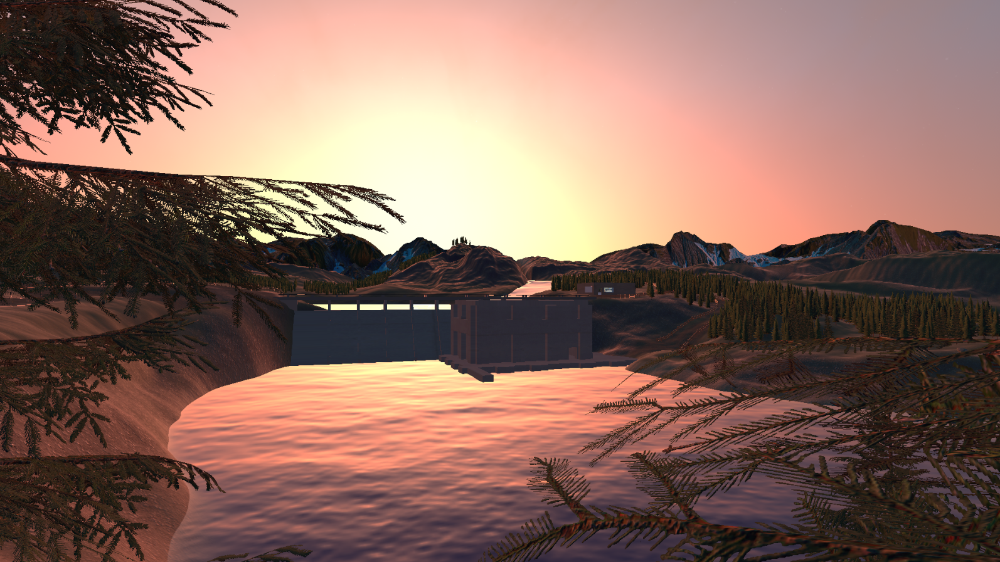

Damned Waters
Short narrative horror at an abandoned hydroelectric dam

The Premise
Set in the fog-choked wilderness of Washington State, Damned Waters is a first-person psychological horror game about isolation, and what horrors lurk in the woods. You arrive in November 1989 as a technician sent by Northwest Hydro & Electric (NH&E) to reestablish contact with a missing crew at the Cascade Ridge Hydroelectric Dam.
What begins as routine maintenance escalates: communications fail, wildlife behaves strangely, and shapes start to appear in the fog. As you piece together the fate of the last crew through radio logs and journal entries, you must confront not only the encroaching wilderness but also your own unraveling sanity.
Core Gameplay
Daily Operations Turn Into Survival
- Monitor pressure gauges and adjust wickets before storms overwhelm the reservoir.
- Repair failing systems across the reservoir.
- Track and document anomalies reported by the missing crew.
Audio-Driven Psychological Horror
Your radio is both lifeline and threat. Sometimes Matt answers. Sometimes other voices.
A custom-built audio system enhances the horror experience, adding realism.
Uncanny Wildlife Encounters
Creatures resemble deer—from far away. Up close, they move wrong. Bend wrong. Watch too long.
Narrative Themes
- Isolation: You are physically alone—but it doesn't seem that way.
- Corporate Negligence & Ecological Horror: NH&E's PR gloss hides disappearances and decay.
- Folklore Meets Reality: Nature becomes a character; patient, watching, remembering.
Tone & Visual Style
- Late‑80s analog aesthetic: CRTs, VHS distortion, tungsten warmth.
- Natural horror focused on atmosphere over gore.
- Slow‑burn dread building to an explosive final act.



Why This Game Exists
I created Damned Waters to explore horror rooted in solitude, miscommunication, ecological imbalance, and the uncanny valley where perception breaks down. It’s about the cost of ignoring warning signs—both personal and environmental—and what happens when a megacorporation decides nature is something to conquer rather than understand.
The dam was never meant to be here. And something wants it gone.
This game is still under development. All images, descriptions, and assets are subject to change.
Back to Projects